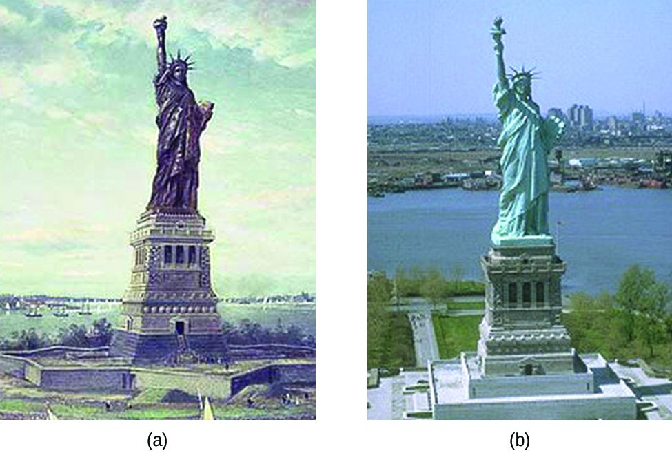

![A grey rectangle, labeled “iron,” is shown with thin purple layers, labeled “Paint layer,” at its upper and lower surfaces. A gap in the upper purple layer at the upper left of the diagram is labeled “Cathodic site.” A blue droplet labeled “water” is positioned on top of the gap. A curved arrow extends from a space above the droplet to the surface of the grey region and into the water droplet. The base of the arrow is labeled “O subscript 2” and the tip of the arrow is labeled “H subscript 2 O.” A gap to the right and on the bottom side of the grey region shows that some of the grey region is gone from the region beneath the purple layer. A water droplet covers this gap and extends into the open space in the grey rectangle. The label “F e superscript 2 positive” is at the center of the droplet. A curved arrow points from the edge of the grey area below to the label. A second curved arrow extends from the F e superscript 2 positive arrow to a rust brown chunk on the lower surface of the purple layer at the edge of the water droplet. A curved arrow extends from O subscript 2 outside the droplet into the droplet to the rust brown chunk. The grey region at the lower right portion of the diagram is labeled “Anodic site.” An arrow extends from the anodic site toward the cathodic site, which is labeled “e superscript negative.”](CNX_Chem_17_06_Rust.jpg)
The original, as published: OpenStax, Chemistry 2e, Flowers, Theopold, Langley, Robinson, section 17.6 Corrosion. © Rice University. CC BY-NC-SA 4.0, https://creativecommons.org/licenses/by-nc-sa/4.0/. Imported as published, from https://openstax.org/books/chemistry-2e/pages/17-6-corrosion
Corrosion is usually defined as the degradation of metals by a naturally occurring electrochemical process. The formation of rust on iron, tarnish on silver, and the blue-green patina that develops on copper are all examples of corrosion. The total cost of corrosion remediation in the United States is significant, with estimates in excess of half a trillion dollars a year.
Coal, which was often high in sulfur, was burned extensively in the early part of the last century. As a result, atmospheric sulfur trioxide, carbon dioxide, and water all reacted with the CuO
These three compounds are responsible for the characteristic blue-green patina seen on the Statue of Liberty (and other outdoor copper structures). Fortunately, formation of patina creates a protective layer on the copper surface, preventing further corrosion of the underlying copper. The formation of the protective layer is called passivation, a phenomenon discussed further in another chapter of this text.

Perhaps the most familiar example of corrosion is the formation of rust on iron. Iron will rust when it is exposed to oxygen and water. Rust formation involves the creation of a galvanic cell at an iron surface, as illustrated in the figure. The relevant redox reactions are described by the following equations:
Further reaction of the iron(II) product in humid air results in the production of an iron(III) oxide hydrate known as rust:
The stoichiometry of the hydrate varies, as indicated by the use of x in the compound formula. Unlike the patina on copper, the formation of rust does not create a protective layer and so corrosion of the iron continues as the rust flakes off and exposes fresh iron to the atmosphere.
One way to keep iron from corroding is to keep it painted. The layer of paint prevents the water and oxygen necessary for rust formation from coming into contact with the iron. As long as the paint remains intact, the iron is protected from corrosion.
Other strategies include alloying the iron with other metals. For example, stainless steel is an alloy of iron containing a small amount of chromium. The chromium tends to collect near the surface, where it corrodes and forms a passivating an oxide layer that protects the iron.
Iron and other metals may also be protected from corrosion by galvanization, a process in which the metal to be protected is coated with a layer of a more readily oxidized metal, usually zinc. When the zinc layer is intact, it prevents air from contacting the underlying iron and thus prevents corrosion. If the zinc layer is breached by either corrosion or mechanical abrasion, the iron may still be protected from corrosion by a cathodic protection process, which is described in the next paragraph.
Another important way to protect metal is to make it the cathode in a galvanic cell. This is cathodic protection and can be used for metals other than just iron. For example, the rusting of underground iron storage tanks and pipes can be prevented or greatly reduced by connecting them to a more active metal such as zinc or magnesium (the figure). This is also used to protect the metal parts in water heaters. The more active metals (lower reduction potential) are called sacrificial anodes because as they get used up as they corrode (oxidize) at the anode. The metal being protected serves as the cathode for the reduction of oxygen in air, and so it simply serves to conduct (not react with) the electrons being transferred. When the anodes are properly monitored and periodically replaced, the useful lifetime of the iron storage tank can be greatly extended.
![A diagram is shown of an underground storage tank system. Underground is a metal tank-like structure, labeled “Sacrificial anode” which is vertically oriented. M g is on the tank, followed by a right arrow, followed by M g superscript 2 plus. A black line extends upward from the center of the tank, but stays underground. A horizontal black line segment continues right underground. 2 e superscript minus is followed by an arrow that points right below the line segment. A vertical black line segment leads downward to a horizontal grey tank which is labeled “Object to be protected (cathode).” 2 e subscript minus is on the tank with an arrow pointing from it to the ground below the tank. Below that arrow is “2 H superscript plus plus O subscript 2 arrow 2 H subscript 2 O.”](CNX_Chem_17_06_Protect.jpg)
Spontaneous oxidation of metals by natural electrochemical processes is called corrosion, familiar examples including the rusting of iron and the tarnishing of silver. Corrosion process involve the creation of a galvanic cell in which different sites on the metal object function as anode and cathode, with the corrosion taking place at the anodic site. Approaches to preventing corrosion of metals include use of a protective coating of zinc (galvanization) and the use of sacrificial anodes connected to the metal object (cathodic protection).
Which member of each pair of metals is more likely to corrode (oxidize)?
(a) Mg or Ca
(b) Au or Hg
(c) Fe or Zn
(d) Ag or Pt
Consider the following metals: Ag, Au, Mg, Ni, and Zn. Which of these metals could be used as a sacrificial anode in the cathodic protection of an underground steel storage tank? Steel is an alloy composed mostly of iron, so use −0.447 V as the standard reduction potential for steel.
Mg and Zn
Aluminum is more easily oxidized than iron and yet when both are exposed to the environment, untreated aluminum has very good corrosion resistance while the corrosion resistance of untreated iron is poor. What might explain this observation?
If a sample of iron and a sample of zinc come into contact, the zinc corrodes but the iron does not. If a sample of iron comes into contact with a sample of copper, the iron corrodes but the copper does not. Explain this phenomenon.
Both examples involve cathodic protection. The (sacrificial) anode is the metal that corrodes (oxidizes or reacts). In the case of iron (−0.447 V) and zinc (−0.7618 V), zinc has a more negative standard reduction potential and so serves as the anode. In the case of iron and copper (0.34 V), iron has the smaller standard reduction potential and so corrodes (serves as the anode).
Suppose you have three different metals, A, B, and C. When metals A and B come into contact, B corrodes and A does not corrode. When metals A and C come into contact, A corrodes and C does not corrode. Based on this information, which metal corrodes and which metal does not corrode when B and C come into contact?
Why would a sacrificial anode made of lithium metal be a bad choice
While the reduction potential of lithium would make it capable of protecting the other metals, this high potential is also indicative of how reactive lithium is; it would have a spontaneous reaction with most substances. This means that the lithium would react quickly with other substances, even those that would not oxidize the metal it is attempting to protect. Reactivity like this means the sacrificial anode would be depleted rapidly and need to be replaced frequently. (Optional additional reason: fire hazard in the presence of water.)
cathodic protection approach to preventing corrosion of a metal object by connecting it to a sacrificial anode composed of a more readily oxidized metal
corrosion degradation of metal via a natural electrochemical process
galvanization method of protecting iron or similar metals from corrosion by coating with a thin layer of more easily oxidized zinc.
sacrificial anode electrode constructed from an easily oxidized metal, often magnesium or zinc, used to prevent corrosion of metal objects via cathodic protection
salt bridge tube filled with inert electrolyte solution